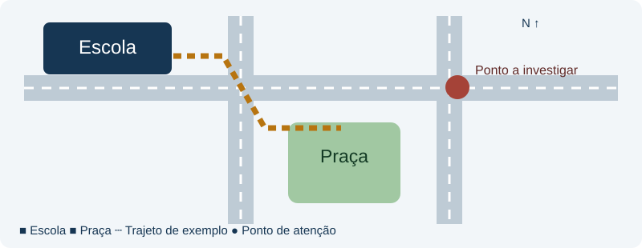

Pronto para planejamento.
Visão geral
🎯 Questão orientadora
Como utilizar a Geografia para reconhecer um problema do lugar onde vivemos e propor uma melhoria para a comunidade?
Produto integrador: mapa diagnóstico comentado e protótipo simples de intervenção (cartaz, croqui, maquete de papel ou tela digital) com pitch de até 2 minutos por equipe.
Competências: observar paisagens, distinguir lugar/território, relacionar sociedade e natureza, usar linguagem cartográfica básica, investigar dados e participar de decisões coletivas.
Modalidade sugerida: presencial, nível introdutório, equipes de 3 a 5. A atividade pode ocorrer sem internet, com desenhos e observação do entorno escolar.

📚 Fonte: resenha da coleção Geografia no Cotidiano, Guia PNLD 2018, pp. 50–54. O Guia é avaliação da coleção, e não reprodução dos capítulos originais. As atividades aqui são adaptações propostas.
📅 Roteiros de 10 aulas — 50 minutos cada
🔎 Oito etapas IPIT e fichas
Abra uma etapa, acompanhe a orientação e registre as evidências. Os campos são livres para fatos reais; os exemplos não são resultados coletados.
🗂️ Gestão pedagógica
📊 Avaliação formativa
Escala: 1 inicial · 2 em desenvolvimento · 3 adequado · 4 consistente. Não atribua notas sem observar evidências.
📚 Referências, inclusão e cuidados
BRASIL. Ministério da Educação. PNLD 2018: Geografia — Guia de livros didáticos, Ensino Médio. Brasília: MEC, 2017. Resenha “Geografia no Cotidiano”, pp. 50–54.
MARTINS, Dadá; BIGOTTO, Francisco; VITIELLO, Márcio. Geografia no Cotidiano. Base Editorial, 2016. Obra descrita pelo Guia PNLD, não disponibilizada integralmente neste projeto.
PEREIRA, Sandra Maria. Metodologia IPIT. Adaptação para micropercurso de 500 minutos. Referência funcional: Projeto Power BI + IPIT.
Acessibilidade e segurança
Permitir registros em áudio, escrita ou desenho; usar mapas grandes e legendas textuais; alternar papéis nas equipes; fornecer cópias impressas; não divulgar nomes, fotos identificáveis, endereços residenciais ou dados pessoais de estudantes. Observações externas somente com autorização e supervisão; quando não viáveis, usar memórias do trajeto e mapas esquemáticos.